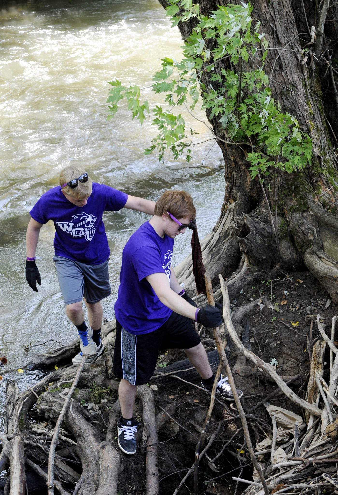

First Ascent is a WCU Orientation Program created to offer unique outdoor adventures specifically for incoming students.
It's the perfect way to start your climb at WCU!
 |
First Ascent RAFTING
Afternoon whitewater rafting trip that takes place the day before your regular on-campus summer orientation session. The perfect quick splash for those on a tight schedule or who want to sample a single outdoor recreation activity. First Ascent WILDERNESS An extended 6 day backpacking and rock climbing trip for the aspiring wilderness explorer. Far away from all civilization, live out of your backpack for 6 days, carrying everything with you from camp to camp. Along the way, you will experience breathtaking mountain views, dip your feet in the sweetest backcountry swimming holes, and spend a day rock climbing near one of your camps. FA Wilderness is the best option for getting away from it all and creating a tight community with your fellow participants. First Ascent ADVENTURE A 6 day outdoor adventure sampler. You'll spend a day each of the following activities: Whitewater Rafting, Rock Climbing, Swimming Hole Hike, Lake Canoe Trip, and a peak ascent hike of one of the tallest mountains in the East. Each night you'll camp in tents near the van at road side campsites or commercial campgrounds, offering at least one shower during the trip. FA Adventure is the best option for an introduction to multiple activities and more of a day trip experience. |